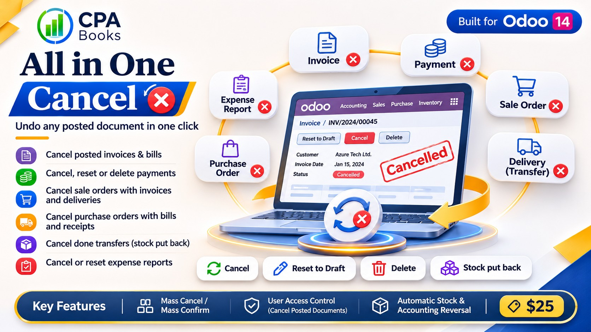
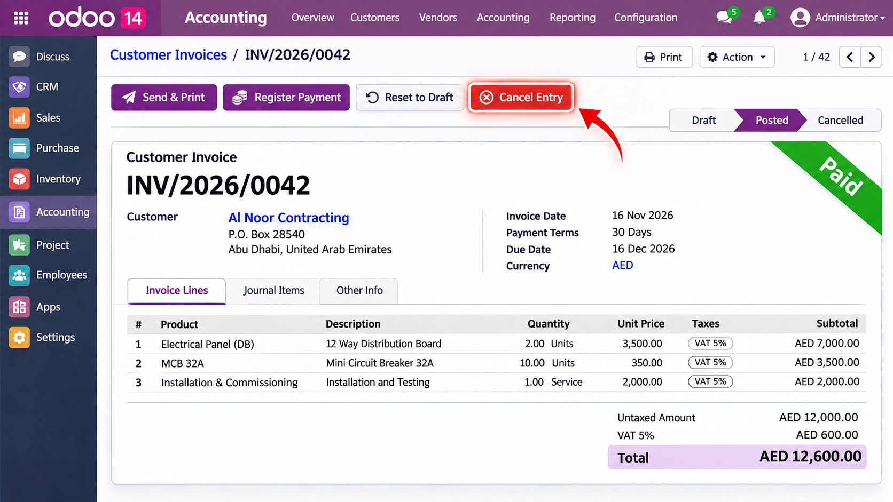
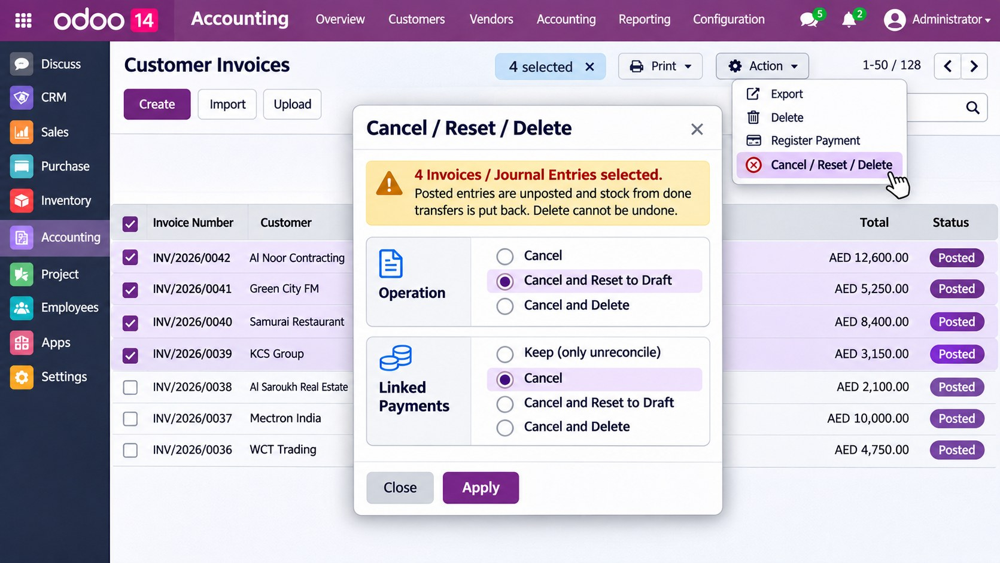
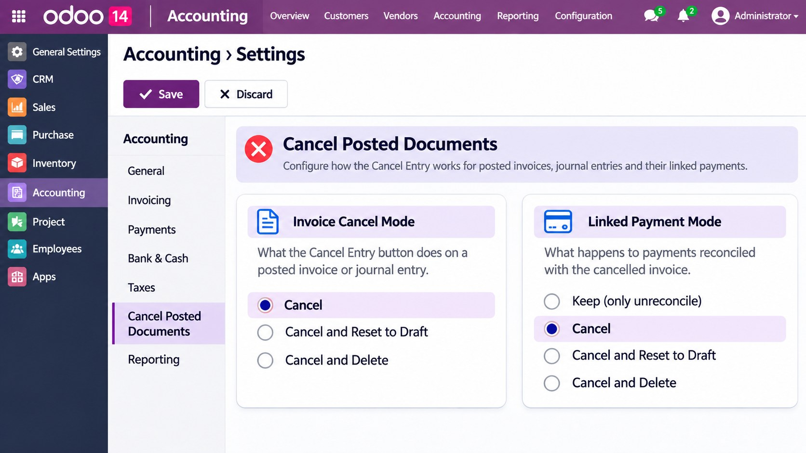
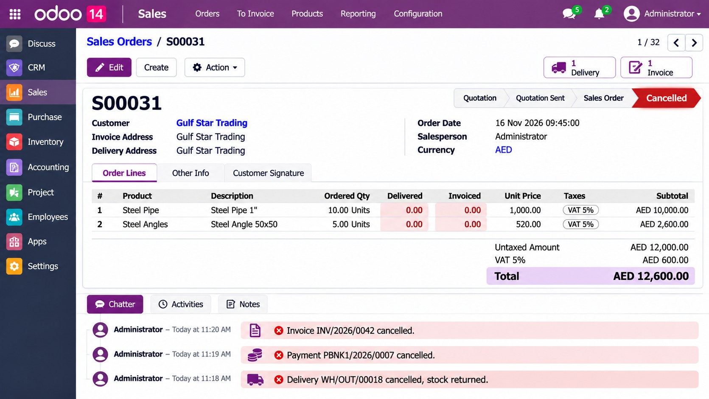
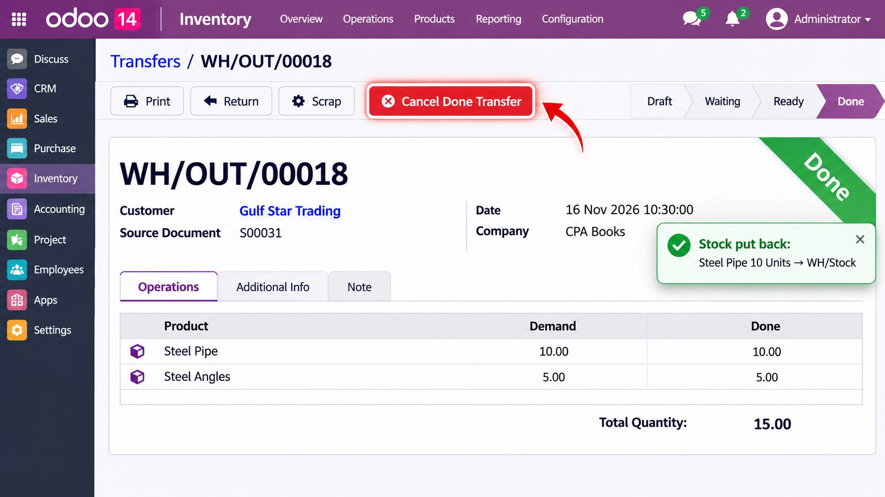

<div style="font-family:-apple-system,BlinkMacSystemFont,'Segoe UI',Roboto,Helvetica,Arial,sans-serif;color:#14213D;background-color:#FFFFFF;padding:8px 4px 24px;line-height:1.55;">
<div style="max-width:1080px;margin:0 auto;">

<!-- ============ HERO ============ -->
<table width="100%" cellpadding="0" cellspacing="0" style="border-collapse:collapse;margin:0 0 14px;"><tr>
<td width="92" valign="top" style="padding:4px 14px 4px 0;"><div style="background-color:#EAF2FF;border-radius:18px;padding:8px;width:84px;"></div></td>
<td valign="middle" style="padding:4px 8px 4px 0;">
<div style="font-size:34px;line-height:1.1;font-weight:800;color:#14213D;margin:0 0 6px;">All in One Cancel</div>
<div style="font-size:16px;color:#475569;max-width:640px;">Undo any posted document in one click: invoices, payments, sale and purchase orders, done transfers and expense reports. Stock and accounting are reversed for you.</div>
</td>
<td valign="top" align="right" style="padding:6px 0 4px 8px;white-space:nowrap;">
<span style="display:inline-block;background-color:#12B76A;color:#FFFFFF;border-radius:999px;padding:5px 12px;font-size:12px;font-weight:700;margin:2px 3px;">Community</span><span style="display:inline-block;background-color:#7C3AED;color:#FFFFFF;border-radius:999px;padding:5px 12px;font-size:12px;font-weight:700;margin:2px 3px;">Enterprise</span><span style="display:inline-block;background-color:#6D28D9;color:#FFFFFF;border-radius:999px;padding:5px 12px;font-size:12px;font-weight:700;margin:2px 3px;">Odoo.sh</span>
</td>
</tr></table>



<!-- ============ STATS STRIP ============ -->
<table width="100%" cellpadding="0" cellspacing="0" style="border-collapse:separate;margin:0 0 30px;"><tr>
<td width="25%" style="padding:6px;"><div style="background-color:#14213D;border-radius:16px;padding:18px 10px;text-align:center;"><div style="font-size:32px;font-weight:800;color:#FFC83D;">6</div><div style="font-size:13px;color:#CBD5E1;">document types</div></div></td>
<td width="25%" style="padding:6px;"><div style="background-color:#14213D;border-radius:16px;padding:18px 10px;text-align:center;"><div style="font-size:32px;font-weight:800;color:#FFC83D;">3</div><div style="font-size:13px;color:#CBD5E1;">modes: Cancel, Reset, Delete</div></div></td>
<td width="25%" style="padding:6px;"><div style="background-color:#14213D;border-radius:16px;padding:18px 10px;text-align:center;"><div style="font-size:32px;font-weight:800;color:#FFC83D;">1</div><div style="font-size:13px;color:#CBD5E1;">click, single or in bulk</div></div></td>
<td width="25%" style="padding:6px;"><div style="background-color:#14213D;border-radius:16px;padding:18px 10px;text-align:center;"><div style="font-size:32px;font-weight:800;color:#FFC83D;">0</div><div style="font-size:13px;color:#CBD5E1;">third-party dependencies</div></div></td>
</tr></table>

<!-- ============ PROBLEM / SOLUTION ============ -->
<table width="100%" cellpadding="0" cellspacing="0" style="border-collapse:separate;margin:0 0 34px;"><tr>
<td width="50%" valign="top" style="padding:6px;"><div style="background-color:#FFF4F4;border:1px solid #FAD4D4;border-radius:16px;padding:20px 22px;min-height:150px;">
<div style="font-size:13px;font-weight:800;color:#DC3545;letter-spacing:1px;margin:0 0 6px;">WITHOUT THIS APP</div>
<div style="font-size:18px;font-weight:800;color:#14213D;margin:0 0 10px;">One wrong entry, ten manual steps</div>
<ul style="font-size:14px;color:#475569;padding-left:18px;margin:0;">
<li style="margin:0 0 5px;">Unreconcile the payment, reset it, cancel it</li>
<li style="margin:0 0 5px;">Reset and cancel the invoice</li>
<li style="margin:0 0 5px;">Create a return for the delivery</li>
<li style="margin:0 0 5px;">Odoo blocks cancelling an order with a done delivery or posted bill</li>
</ul></div></td>
<td width="50%" valign="top" style="padding:6px;"><div style="background-color:#F0FBF4;border:1px solid #BFE9CD;border-radius:16px;padding:20px 22px;min-height:150px;">
<div style="font-size:13px;font-weight:800;color:#12B76A;letter-spacing:1px;margin:0 0 6px;">WITH ALL IN ONE CANCEL</div>
<div style="font-size:18px;font-weight:800;color:#14213D;margin:0 0 10px;">One click, everything undone</div>
<ul style="font-size:14px;color:#475569;padding-left:18px;margin:0;">
<li style="margin:0 0 5px;">Cancel the order: invoices, payments and deliveries follow</li>
<li style="margin:0 0 5px;">Stock goes back to its location automatically</li>
<li style="margin:0 0 5px;">Delivered, received and invoiced quantities reset to zero</li>
<li style="margin:0 0 5px;">Do it for one record or hundreds from the list view</li>
</ul></div></td>
</tr></table>

<!-- ============ WALKTHROUGH ============ -->
<div style="text-align:center;margin:0 0 6px;"><span style="display:inline-block;background-color:#EAF2FF;color:#0D57B0;border-radius:999px;padding:5px 14px;font-size:12px;font-weight:800;letter-spacing:1px;">SEE IT IN ACTION</span></div>
<div style="text-align:center;font-size:28px;font-weight:800;color:#14213D;margin:0 0 6px;">How it works, screen by screen</div>
<div style="text-align:center;font-size:15px;color:#64748B;margin:0 0 26px;">Five screens cover the whole workflow.</div>

<!-- Step 1 -->
<table width="100%" cellpadding="0" cellspacing="0" style="border-collapse:collapse;margin:0 0 10px;"><tr>
<td width="56" valign="top"><div style="background-color:#0D57B0;color:#FFFFFF;border-radius:14px;width:44px;height:44px;line-height:44px;text-align:center;font-size:20px;font-weight:800;">1</div></td>
<td valign="top"><div style="font-size:22px;font-weight:800;color:#14213D;margin:0 0 2px;">Cancel a posted invoice in one click</div>
<div style="font-size:15px;color:#475569;">Open any posted invoice, bill, credit note or journal entry and click <strong>Cancel Entry</strong>. Paid invoices work too: the payment is unreconciled first.</div></td>
</tr></table>


<!-- Step 2 -->
<table width="100%" cellpadding="0" cellspacing="0" style="border-collapse:collapse;margin:0 0 10px;"><tr>
<td width="56" valign="top"><div style="background-color:#0D57B0;color:#FFFFFF;border-radius:14px;width:44px;height:44px;line-height:44px;text-align:center;font-size:20px;font-weight:800;">2</div></td>
<td valign="top"><div style="font-size:22px;font-weight:800;color:#14213D;margin:0 0 2px;">Bulk cancel from any list view</div>
<div style="font-size:15px;color:#475569;">Select records, then <strong>Action &gt; Cancel / Reset / Delete</strong>. Choose what happens to the documents and to their linked payments, then click Apply. Works on invoices, payments, sale orders, purchase orders and transfers.</div></td>
</tr></table>


<!-- Step 3 -->
<table width="100%" cellpadding="0" cellspacing="0" style="border-collapse:collapse;margin:0 0 10px;"><tr>
<td width="56" valign="top"><div style="background-color:#0D57B0;color:#FFFFFF;border-radius:14px;width:44px;height:44px;line-height:44px;text-align:center;font-size:20px;font-weight:800;">3</div></td>
<td valign="top"><div style="font-size:22px;font-weight:800;color:#14213D;margin:0 0 2px;">Decide once in Settings</div>
<div style="font-size:15px;color:#475569;">In <strong>Accounting &gt; Settings</strong>, set what the Cancel Entry button does (Cancel, Reset to Draft or Delete) and what happens to linked payments (Keep, Cancel, Reset or Delete). Each company has its own settings.</div></td>
</tr></table>


<!-- Step 4 -->
<table width="100%" cellpadding="0" cellspacing="0" style="border-collapse:collapse;margin:0 0 10px;"><tr>
<td width="56" valign="top"><div style="background-color:#0D57B0;color:#FFFFFF;border-radius:14px;width:44px;height:44px;line-height:44px;text-align:center;font-size:20px;font-weight:800;">4</div></td>
<td valign="top"><div style="font-size:22px;font-weight:800;color:#14213D;margin:0 0 2px;">Cancel a confirmed order with everything linked</div>
<div style="font-size:15px;color:#475569;">Click the standard <strong>Cancel</strong> button on a sale order. Its posted invoices, payments and done deliveries are cancelled too, and <strong>Delivered</strong> and <strong>Invoiced</strong> go back to 0.00. Purchase orders work the same way with bills and receipts.</div></td>
</tr></table>


<!-- Step 5 -->
<table width="100%" cellpadding="0" cellspacing="0" style="border-collapse:collapse;margin:0 0 10px;"><tr>
<td width="56" valign="top"><div style="background-color:#0D57B0;color:#FFFFFF;border-radius:14px;width:44px;height:44px;line-height:44px;text-align:center;font-size:20px;font-weight:800;">5</div></td>
<td valign="top"><div style="font-size:22px;font-weight:800;color:#14213D;margin:0 0 2px;">Cancel a done transfer, stock goes back</div>
<div style="font-size:15px;color:#475569;">On a done delivery or receipt, click <strong>Cancel Done Transfer</strong>. The quantities return to their source location and the stock valuation entries are removed. Then use <strong>Reset to Draft</strong> to fix and validate it again.</div></td>
</tr></table>


<!-- ============ COVERAGE TABLE ============ -->
<div style="font-size:26px;font-weight:800;color:#14213D;margin:0 0 4px;">What you can undo</div>
<div style="font-size:15px;color:#64748B;margin:0 0 14px;">Every supported document, and what happens to the documents linked to it.</div>
<table width="100%" cellpadding="0" cellspacing="0" style="border-collapse:collapse;font-size:14px;margin:0 0 36px;border:1px solid #E2E8F0;">
<tr style="background-color:#14213D;color:#FFFFFF;">
<td style="padding:12px 14px;font-weight:700;">Document</td><td align="center" style="padding:12px 8px;font-weight:700;">Cancel</td><td align="center" style="padding:12px 8px;font-weight:700;">Reset to Draft</td><td align="center" style="padding:12px 8px;font-weight:700;">Delete</td><td style="padding:12px 14px;font-weight:700;">Linked documents</td>
</tr>
<tr style="background-color:#FFFFFF;"><td style="padding:11px 14px;font-weight:700;border-top:1px solid #E2E8F0;">Invoices, bills, credit notes, journal entries</td><td align="center" style="color:#12B76A;font-weight:800;border-top:1px solid #E2E8F0;">&#10003;</td><td align="center" style="color:#12B76A;font-weight:800;border-top:1px solid #E2E8F0;">&#10003;</td><td align="center" style="color:#12B76A;font-weight:800;border-top:1px solid #E2E8F0;">&#10003;</td><td style="padding:11px 14px;color:#475569;border-top:1px solid #E2E8F0;">Payments unreconciled, then kept, cancelled, reset or deleted</td></tr>
<tr style="background-color:#F8FAFC;"><td style="padding:11px 14px;font-weight:700;border-top:1px solid #E2E8F0;">Payments</td><td align="center" style="color:#12B76A;font-weight:800;border-top:1px solid #E2E8F0;">&#10003;</td><td align="center" style="color:#12B76A;font-weight:800;border-top:1px solid #E2E8F0;">&#10003;</td><td align="center" style="color:#12B76A;font-weight:800;border-top:1px solid #E2E8F0;">&#10003;</td><td style="padding:11px 14px;color:#475569;border-top:1px solid #E2E8F0;">Invoices become unpaid again</td></tr>
<tr style="background-color:#FFFFFF;"><td style="padding:11px 14px;font-weight:700;border-top:1px solid #E2E8F0;">Sale orders</td><td align="center" style="color:#12B76A;font-weight:800;border-top:1px solid #E2E8F0;">&#10003;</td><td align="center" style="color:#12B76A;font-weight:800;border-top:1px solid #E2E8F0;">&#10003;</td><td align="center" style="color:#12B76A;font-weight:800;border-top:1px solid #E2E8F0;">&#10003;</td><td style="padding:11px 14px;color:#475569;border-top:1px solid #E2E8F0;">Invoices, payments and deliveries; stock put back</td></tr>
<tr style="background-color:#F8FAFC;"><td style="padding:11px 14px;font-weight:700;border-top:1px solid #E2E8F0;">Purchase orders</td><td align="center" style="color:#12B76A;font-weight:800;border-top:1px solid #E2E8F0;">&#10003;</td><td align="center" style="color:#12B76A;font-weight:800;border-top:1px solid #E2E8F0;">&#10003;</td><td align="center" style="color:#12B76A;font-weight:800;border-top:1px solid #E2E8F0;">&#10003;</td><td style="padding:11px 14px;color:#475569;border-top:1px solid #E2E8F0;">Bills, payments and receipts; stock removed</td></tr>
<tr style="background-color:#FFFFFF;"><td style="padding:11px 14px;font-weight:700;border-top:1px solid #E2E8F0;">Transfers (done or open)</td><td align="center" style="color:#12B76A;font-weight:800;border-top:1px solid #E2E8F0;">&#10003;</td><td align="center" style="color:#12B76A;font-weight:800;border-top:1px solid #E2E8F0;">&#10003;</td><td align="center" style="color:#12B76A;font-weight:800;border-top:1px solid #E2E8F0;">&#10003;</td><td style="padding:11px 14px;color:#475569;border-top:1px solid #E2E8F0;">Stock quantities and valuation entries reversed</td></tr>
<tr style="background-color:#F8FAFC;"><td style="padding:11px 14px;font-weight:700;border-top:1px solid #E2E8F0;">Expense reports <span style="font-weight:400;color:#64748B;">(if Expenses is installed)</span></td><td align="center" style="color:#12B76A;font-weight:800;border-top:1px solid #E2E8F0;">&#10003;</td><td align="center" style="color:#12B76A;font-weight:800;border-top:1px solid #E2E8F0;">&#10003;</td><td align="center" style="color:#12B76A;font-weight:800;border-top:1px solid #E2E8F0;">&#10003;</td><td style="padding:11px 14px;color:#475569;border-top:1px solid #E2E8F0;">Journal entry and payments removed</td></tr>
</table>

<!-- ============ EXTRA FEATURES ============ -->
<table width="100%" cellpadding="0" cellspacing="0" style="border-collapse:separate;margin:0 0 36px;"><tr>
<td width="33%" valign="top" style="padding:6px;"><div style="background-color:#F4F6F8;border-radius:16px;padding:20px;min-height:120px;"><div style="font-size:26px;margin:0 0 6px;">&#128274;</div><div style="font-size:16px;font-weight:800;color:#14213D;margin:0 0 4px;">Access control</div><div style="font-size:14px;color:#475569;">Only users in the group <strong>Cancel Posted Documents</strong> see the buttons and actions. Everyone else keeps standard Odoo.</div></div></td>
<td width="33%" valign="top" style="padding:6px;"><div style="background-color:#F4F6F8;border-radius:16px;padding:20px;min-height:120px;"><div style="font-size:26px;margin:0 0 6px;">&#9889;</div><div style="font-size:16px;font-weight:800;color:#14213D;margin:0 0 4px;">Mass confirm</div><div style="font-size:14px;color:#475569;">Confirm many quotations or RFQs at once with <strong>Action &gt; Confirm Quotations / Confirm RFQs</strong>.</div></div></td>
<td width="33%" valign="top" style="padding:6px;"><div style="background-color:#F4F6F8;border-radius:16px;padding:20px;min-height:120px;"><div style="font-size:26px;margin:0 0 6px;">&#129513;</div><div style="font-size:16px;font-weight:800;color:#14213D;margin:0 0 4px;">Standard Odoo only</div><div style="font-size:14px;color:#475569;">Built on official Odoo modules. No third-party apps to buy or install.</div></div></td>
</tr></table>

<!-- ============ SETUP ============ -->
<div style="font-size:26px;font-weight:800;color:#14213D;margin:0 0 14px;">Set up in 2 minutes</div>
<table width="100%" cellpadding="0" cellspacing="0" style="border-collapse:separate;margin:0 0 36px;"><tr>
<td width="25%" valign="top" style="padding:6px;"><div style="border:1px solid #E2E8F0;border-radius:16px;padding:18px;min-height:96px;"><div style="font-size:13px;font-weight:800;color:#0D57B0;margin:0 0 4px;">STEP 1</div><div style="font-size:14px;color:#334155;">Install the app. The admin user gets the cancel group automatically.</div></div></td>
<td width="25%" valign="top" style="padding:6px;"><div style="border:1px solid #E2E8F0;border-radius:16px;padding:18px;min-height:96px;"><div style="font-size:13px;font-weight:800;color:#0D57B0;margin:0 0 4px;">STEP 2</div><div style="font-size:14px;color:#334155;">Give other users the group in <strong>Settings &gt; Users &gt; Extra Rights</strong>.</div></div></td>
<td width="25%" valign="top" style="padding:6px;"><div style="border:1px solid #E2E8F0;border-radius:16px;padding:18px;min-height:96px;"><div style="font-size:13px;font-weight:800;color:#0D57B0;margin:0 0 4px;">STEP 3</div><div style="font-size:14px;color:#334155;">Pick the invoice and payment modes in <strong>Accounting &gt; Settings</strong>.</div></div></td>
<td width="25%" valign="top" style="padding:6px;"><div style="border:1px solid #E2E8F0;border-radius:16px;padding:18px;min-height:96px;"><div style="font-size:13px;font-weight:800;color:#0D57B0;margin:0 0 4px;">STEP 4</div><div style="font-size:14px;color:#334155;">Use the buttons on documents or <strong>Action &gt; Cancel / Reset / Delete</strong> in lists.</div></div></td>
</tr></table>

<!-- ============ FAQ ============ -->
<div style="font-size:26px;font-weight:800;color:#14213D;margin:0 0 14px;">Frequently asked questions</div>
<div style="border:1px solid #E2E8F0;border-radius:16px;padding:6px 22px;margin:0 0 36px;">
<div style="padding:14px 0;border-bottom:1px solid #EEF2F6;"><div style="font-size:15px;font-weight:800;color:#14213D;">Can I undo a Delete?</div><div style="font-size:14px;color:#475569;">No. Delete removes the records for good. Use Cancel or Reset to Draft when you need an audit trail.</div></div>
<div style="padding:14px 0;border-bottom:1px solid #EEF2F6;"><div style="font-size:15px;font-weight:800;color:#14213D;">Does it work with locked (hashed) journals?</div><div style="font-size:14px;color:#475569;">No. Journals with "Lock Posted Entries with Hash" cannot be reset, the same as in standard Odoo.</div></div>
<div style="padding:14px 0;border-bottom:1px solid #EEF2F6;"><div style="font-size:15px;font-weight:800;color:#14213D;">What about multi-step deliveries (pick, pack, ship)?</div><div style="font-size:14px;color:#475569;">Cancel the last step first. The app tells you which transfer to cancel if a later step is already done.</div></div>
<div style="padding:14px 0;border-bottom:1px solid #EEF2F6;"><div style="font-size:15px;font-weight:800;color:#14213D;">Do normal users see the Cancel buttons?</div><div style="font-size:14px;color:#475569;">No. Only users in the Cancel Posted Documents group. For everyone else, Odoo works as usual.</div></div>
<div style="padding:14px 0;"><div style="font-size:15px;font-weight:800;color:#14213D;">Do I need the Expenses or Inventory Valuation apps?</div><div style="font-size:14px;color:#475569;">No. If they are installed, the app handles them too. If not, nothing extra is installed.</div></div>
</div>

<!-- ============ COMPATIBILITY ============ -->
<table width="100%" cellpadding="0" cellspacing="0" style="border-collapse:separate;margin:0 0 26px;"><tr>
<td width="50%" valign="top" style="padding:6px;"><div style="background-color:#EAF2FF;border-radius:16px;padding:18px 20px;"><div style="font-size:15px;font-weight:800;color:#0D57B0;margin:0 0 4px;">Compatible with</div><div style="font-size:14px;color:#14213D;">Odoo 19 Community, Enterprise and Odoo.sh</div></div></td>
<td width="50%" valign="top" style="padding:6px;"><div style="background-color:#EAF2FF;border-radius:16px;padding:18px 20px;"><div style="font-size:15px;font-weight:800;color:#0D57B0;margin:0 0 4px;">Depends on</div><div style="font-size:14px;color:#14213D;">account, sale_management, sale_stock, purchase, purchase_stock</div></div></td>
</tr></table>

<!-- ============ SUPPORT ============ -->
<div style="background-color:#14213D;border-radius:18px;padding:28px 24px;color:#FFFFFF;text-align:center;">
<div style="font-size:22px;font-weight:800;margin:0 0 6px;">Questions, a demo or a custom change?</div>
<div style="font-size:15px;color:#CBD5E1;margin:0 0 14px;">Contact the CPA Books Odoo team.</div>
<a href="mailto:info@cpabooks.org" style="display:inline-block;background-color:#FFC83D;color:#14213D;border-radius:999px;padding:10px 22px;font-size:14px;font-weight:800;text-decoration:none;margin:4px;">info@cpabooks.org</a>
<a href="https://www.cpabooks.co" style="display:inline-block;background-color:#FFFFFF;color:#14213D;border-radius:999px;padding:10px 22px;font-size:14px;font-weight:800;text-decoration:none;margin:4px;">www.cpabooks.co</a>
</div>

</div>
</div>
